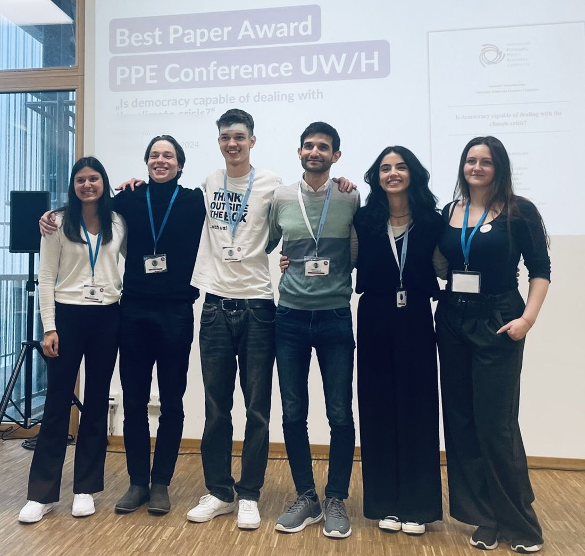

Hydrogen-generation prototype
Designed and built a working steel-plate hydrogen-generation system, from concept through construction to practical testing of gas output.
I'm Mohammadhossein Mohammadi, known as Mo. I hold an M.A. in Philosophy, Politics & Economics and a B.Sc. in mechanical engineering, and I'm based in the 's-Hertogenbosch area, the Netherlands. I work where technology, economics and organisations meet: innovation, sustainability and energy-transition projects, policy and strategy, and engineering.
The route so far
I started as a mechanical engineer in Isfahan, doing failure analysis, designing components in AutoCAD and Ansys, and contributing to improvements that lifted operational efficiency by more than 20%. I kept seeing sound technical fixes stall for reasons engineering alone couldn't explain: cost, incentives, ownership, habit. So I took a master's in Philosophy, Politics & Economics in Germany, working alongside my studies throughout, to understand the economic and organisational side of change.
My master's gave me the tools to analyse that: economics, political and institutional analysis, and how decisions get made. My thesis looked at circular-economy transitions in post-industrial cities, written with Duisburg Business & Innovation. I add a practical engineering base and shop-floor experience, most recently on a GMP cleanroom line building insulin pumps. I'm open to roles that use this mix, especially in innovation, sustainability, policy and strategy.
Worked on green-energy and regional innovation projects: tracked milestones, deliverables and risks, and did technical, market and funding research. Wrote my master's thesis on circular-economy transitions in post-industrial cities with the company.
Built Python automation for network monitoring, improving issue detection and quality reporting, together with test-automation partner QiTASC.
Trained new staff on standard operating procedures, quality and safety in a high-volume operation.
Matched Taiwanese manufacturers with Iranian partners through market research.
Contributed to improvements that raised operational efficiency by more than 20%. Did failure analysis, designed components in AutoCAD, supported analysis in Ansys and prepared cost estimates.
Scroll and watch a seed become a tree. Then follow its branches: every one is a project, from my engineering roots to the ideas I'm building right now.
A seed. Curiosity about how things work.
A sprout. Mechanical engineering: designing, testing, building.
A young plant. Economics, policy and research on sustainability transitions.
A tree. Now I grow my own projects. Nine blossoms, nine projects, each on a branch below.
Designed and built a working steel-plate hydrogen-generation system, from concept through construction to practical testing of gas output.
Built a GPT-based assistant that identifies start-ups and organises their contact information by country and city, to speed up market and partner research.
A new energy cooperative needed to sell 70% of the shares in a roughly 400-panel solar roof on a municipal building before it could be built, and had sold 20%. Our team analysed the barriers, mapped the stakeholders, built a value-exchange model, and proposed a marketing campaign, buy-in strategy and co-creation plan.
How policy, institutions, incentives and cooperation shape the move from linear to circular production in post-industrial Duisburg, with Amsterdam and Singapore as comparative cases.
My personal site, built as plain HTML and hosted free on GitHub Pages. Set up search-engine and AI-search visibility (structured data, sitemap, Google Search Console and Bing) and privacy-friendly, cookieless visitor statistics.
A mobile-first app for meeting new people around Oss through small, public hangouts: post a plan, others ask to join, the host accepts, and the group chats and meets. After meeting, people leave references, which builds trust over time. Built with safety in mind (18+ check, public meeting spots); the launch version runs on Firebase with an Android app.
Dog play dates in Noord-Brabant, starting in Oss. Owners make a profile for their dog, get matched with dogs of similar energy, size and play style, and plan open or private play dates. Built by reusing the Meetout codebase, in Dutch and English.
A no-shame life game for adults with ADHD, informed by CBT techniques: small real-life steps help your avatar grow, and missing a day never costs you anything. A playtest prototype, run like a small company with AI agents in roles from product and design to privacy, marketing and finance.
Python pipelines that check online sources on a schedule, filter and score new items with AI, draft tailored documents, and stop for a one-tap human approval before anything is sent. Plus a review loop in which two AI models check each other's work, backed by automated regression tests and an audit of every command run.

Mar 2023 – Apr 2024
International Philosophy, Politics & Economics Conference · Universität Witten/Herdecke
I volunteered on the marketing team for the 8th International PPE Conference 2024, themed "Generation on the EDGE: Environment, Democracy, Globalization and Economics", shaping how the event was presented and communicated.
It gave me hands-on experience in academic event marketing, and a closer look at how good communication supports academic exchange at the intersection of economics, politics and philosophy.
Thesis on circular-economy transitions.
MT, VT, UT Level I/II · RT interpretation Level II · IR Level I
From my M.A. in Philosophy, Politics & Economics
Economic analysis, political economy, institutional economics, cost-benefit thinking, markets and regulation
Policy analysis, governance and decision-making, stakeholder and power mapping, sustainability and energy-transition policy, circular economy
Ethics and responsible innovation, critical thinking, argumentation, analysing trade-offs between competing values
Qualitative and desk research, academic writing, case-study analysis, presenting complex ideas clearly, interdisciplinary teamwork
From engineering and industry
Bottleneck analysis, flow improvement, standardised work, root-cause analysis, work instructions, Lean
GMP, cleanroom operations, medical device assembly, quality control, failure analysis, equipment safety, NDT
Mechanical design, engineering drawings, AutoCAD, Ansys Mechanical, SolidWorks, Python
Cost estimation, project coordination, stakeholder communication, data analysis, market research
Languages